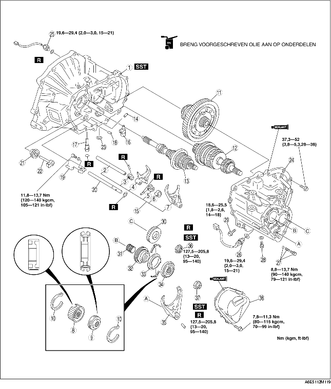

1. Plaats de onderdelen in de aangegeven volgorde, zie de tabel.

.
1. Zet SST in elkaar.
2. Plaats het koppelingshuis op het SST.
1. Plaats de primaire en de secundaire as gelijktijdig.
1. Schakel de 2e versnelling in en zet de schakelvork en de schakelas in de aangegeven positie.
2. Plaats de veerzitting met de veer in de as van de achteruitschakelhevel, plaats de stalen kogel en plaats een schraper tegen de kogel.
3. Houd de rand van het selectie- en schakelaseind tegen de schraper, druk het selectie- en schakelaseind in de richting van de pijl zodat de kogel in de as wordt gedrukt en de as tegelijkertijd in lijn komt met de boring voor de schakelaskoppeling in het koppelingshuis.
4. Plaats de schakelmoffen in de neutrale stand en tik de schakelas naar beneden, zodat de stalen kogel in de middelste van de drie groeven in het selectie- en schakelaseind valt.
5. Trek het deel van het selectie- en schakelaseind met de stalen kogel naar voren, zodat de kogel in de pal in de groef valt.
1. Plaats de schakelhevel tussen de schakelarm en het selectie- en schakelaseind en bevestig de schakelhevelas aan de schakelhevel.
2. Breng de pengaten van de schakelhevelas en het koppelingshuis in lijn en plaats een nieuwe pen.
1. Plaats schakelaseind 1 en schakelas 2 en draai de bevestigingsbout vast.
1. Plaats het tussentandwiel achteruit en de as tussentandwiel achteruit.
2. Plaats de magneet in het koppelingshuis.
3. Breng het einde van de blokkeermof in lijn met de bedieningshevel (pijl) en draai tegelijkertijd het boutgat in de as van het tussentandwiel achteruit in de aangegeven richting.
1. Breng een dun laagje siliconenpakking op het contactvlak van het koppelingshuis en van het transmissiehuis en draai de bevestigingsbouten van het transmissiehuis met het voorgeschreven aanhaalmoment vast.
2. Plaats het SST in de openingen voor de aandrijfas en de tussenas.
1. Plaats het secundaire tandwiel van de 5e versnelling op de aangegeven manier.
1. Plaats de schakelnaaf 5e/achteruit en de schakelvork 5e/achteruit tegelijkertijd.
1. Schakel de 1e versnelling in.
2. Blokkeer de primaire as met SST.
3. Plaats nieuwe borgmoeren op de primaire en secundaire as en draai deze met het voorgeschreven aanhaalmoment vast.
4. Borg de borgmoeren.
5. Meet de axiale speling van het tandwiel van de 5e versnelling met een meetklok.